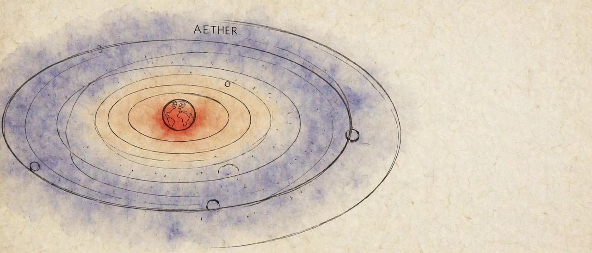
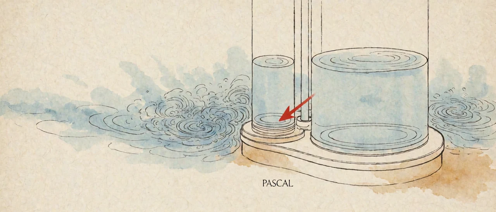

Science does not speak of magic
01Origin — Ether began not as a medium of physics but as a different substance above the sky
The Navier–Stokes equations are built from three components: density, pressure, viscosity. Digging into density took me to mass, mass took me to the Principia, and the Principia took me to Descartes's ether. That damned ether keeps getting in the way. Let's first check where the word even started.
Ether did not start as a word of physics. The Greek aither is the bright, clear upper sky where the gods breathe, and in Hesiod's Theogony it is a deity born of Night and Darkness.
Aristotle put it into a system of matter. The four elements, earth, water, air and fire, move up and down below the Moon, and they come into being and pass away. The celestial spheres above the Moon are filled with a fifth element, ether, which circles forever and never comes into being or passes away. Medieval Latin called it the fifth essence, quinta essentia, which is where the English word quintessence comes from.
| Period | Where ether stood |
|---|---|
| Greek myth | The upper sky of the gods, the deity Aither |
| Aristotle | The fifth element filling the spheres above the Moon |
| Descartes (1644) | Subtle matter filling space with no gaps, carrying planets in vortices |
| Huygens (1690) | The medium carrying waves of light |
| Fresnel, Maxwell (19th century) | The medium of light and electromagnetic waves |
| Michelson–Morley (1887) | No trace of Earth moving through the ether |
| Einstein (1905) | Dropped as superfluous |
Ether moved from the sky of metaphysics to a medium of mechanics, then to a medium of light. Each time it was thrown out, it was called back somewhere else.

02Mass — The mass in the density term was first separated from weight in the Principia's first definition
That mass is density multiplied by volume is the first sentence of the Principia.
Yes. The body of the Principia opens with Definition I: the quantity of matter is the measure of it arising from its density and bulk conjointly. That is where mass was first defined apart from weight, and Newton swung pendulums of different materials to show that mass is proportional to weight to one part in a thousand.
The definition is criticized as circular, since density is already mass divided by volume. Mach pointed this out in an 1883 book. Trace the density term of Navier–Stokes back far enough and you reach this circular first sentence.
03Vortex — What Newton had to get past was not an apple but Descartes
Descartes said science doesn't speak of magic, then assumed an ether to explain planetary orbits, and his explanation didn't match the values Kepler observed. The law of gravity was born out of resolving that mismatch. It wasn't the apple. Descartes was the motif that put universal gravitation into Newton's head.
In his Principles of Philosophy of 1644, Descartes held that force is passed only by contact. Saying that separated bodies pull on each other was appealing to a hidden quality, which is to say, magic. So he filled space with subtle matter leaving no gaps, and explained that huge vortices of that matter carry the planets around the Sun.
Newton tears down this vortex by calculation at the end of Book II of the Principia. In a fluid vortex, the period of each layer comes out proportional to the square of its distance from the center, while Kepler's third law demands the 1.5 power of distance. Vortices cannot produce the observed planetary orbits. Newton spent all of Book II on the resistance and motion of fluids to prepare this refutation.
The direct trigger for the book was Halley's question in 1684: what orbit does a planet trace under a force inversely proportional to the square of distance? The opponent to be overcome was Descartes. Even the title sets Mathematical Principles of Natural Philosophy against Descartes's Principles of Philosophy. The apple comes down as an anecdote Newton told an acquaintance late in life. The target of the calculation was Descartes's vortex.

04Magic — The side that set up ether to avoid magic now called Newton's gravity magic
And the Cartesians would have just sat there? They must have said Newton's gravity, things pulling each other across a distance, is the real magic.
That is how they attacked. Huygens and Leibniz saw the idea that separated bodies attract each other without a medium as a retreat to hidden qualities. The side that set up ether to get rid of magic called the gravity of Newton, who did without ether, magic.
Newton himself was uneasy about action at a distance. In a 1693 letter to Bentley he wrote that one body acting on another at a distance without a medium is so great an absurdity that no one competent in philosophy could accept it. In the General Scholium of the second edition in 1713, he answered that he frames no hypotheses about the cause of gravity. Privately he did not abandon ether. In the Queries at the end of the 1717 edition of Opticks, he speculated directly about an ethereal medium to explain gravity and light. What Newton threw out was the Cartesian vortex. On ether itself he suspended judgment.
05Vacuum — Pascal punched a hole in Descartes's gapless space
If the premise that space is packed full without gaps gets shaken, the vortex gets shaken with it. Wasn't Pascal the one who went after that?
Yes. Descartes held that space is simply the extension of matter, so empty space cannot exist. After Torricelli showed in 1643 that an empty space forms above a column of mercury, the dispute began, and in 1647 Pascal met Descartes in person and parted ways with him on this very question.
The next year, Pascal's brother-in-law Périer carried a mercury tube up the Puy de Dôme. The higher he climbed, the lower the mercury column fell. What holds up the mercury is the weight of the air, and the space at the top of the tube is truly empty. Atmospheric pressure and the vacuum were proven together, and Descartes's gapless space got its first hole.
06Counterattack — The Cartesian counterattack gave birth to fluid mechanics in the Bernoulli family
So the Cartesian rebuttal unfolds into the Bernoullis.
When Newton and the Continent were at odds, Johann Bernoulli stood by the vortex to the end. Even in his prize essays for the Paris Academy, he explained planetary orbits on the basis of vortices.
To defend the vortex, one had to work out how fluids flow. The battlefield on which Newton had torn down the vortex in Book II was also fluids. The Bernoulli family took over that battlefield. His son Daniel Bernoulli set out the relation between speed and pressure in a flowing fluid in Hydrodynamica in 1738, and that is the Bernoulli principle used today to design wings and pipes.
07Euler — Euler is the bridge who built both the fluid equations and the light ether
Euler was Bernoulli's student, wasn't he? The father of modern mathematics.
In Basel, Euler got private lessons from Johann Bernoulli every Saturday, and Johann persuaded Euler's father to let his son take up mathematics instead of theology. He was friends with Daniel, and it was on Daniel's recommendation that he went to the St. Petersburg Academy in 1727. The function notation f(x), the constant e, the imaginary unit i and the summation sign Σ were fixed by Euler, and π became standard through his use.
In the story of ether, Euler touches two branches at once.
| Branch | Euler's work |
|---|---|
| Fluids | 1757, the equations of motion for an ideal fluid without viscosity. The step right before Navier–Stokes |
| Light | 1746, New Theory of Light and Colors, defending light as a wave in the ether against Newton's particle theory |
In the 18th century, when the particle theory prevailed on Newton's authority, Euler was the biggest name to hold the line for waves. The Cartesian lineage built the equations of fluids and, at the same moment, moved ether over to become the medium of light and handed it to the next century.
08Light Ether — Ether came back as the medium of light and in 1887 left no trace
Carry on with what happened in the 19th century to the ether that moved over to light.
Early in the 19th century, Young's double-slit experiment and Fresnel's theory of diffraction won the day for light as a wave. A wave was thought to need something that waves, and that something was the light ether. When Maxwell set out light as an electromagnetic wave in 1865, ether became the medium of the electromagnetic field.
If ether sits still in the universe and Earth races through it, the speed of light should differ slightly by direction. In 1887 Michelson and Morley measured this difference with an interferometer, and the expected difference did not appear. Ether left none of the traces it should have.
09Einstein — The equations were Lorentz's first; the reading that dropped ether was Einstein's share
Lorentz and Poincaré couldn't get rid of ether, so Einstein, who did, walked off with special relativity. Isn't that it?
Largely, yes. Lorentz completed in 1904 the equations now called the Lorentz transformation, and Poincaré worked out the name "principle of relativity" and even the mathematical structure those transformations form. The equations were almost all there. Both men kept ether as a real but undetectable reference frame, and explained length contraction as bodies actually shrinking as they move through the ether.
In his 1905 paper, Einstein wrote that ether was superfluous and dropped it. The same equations became properties of time and space themselves rather than the mechanics of bodies in ether. That change of reading is special relativity's share.
10Map — Split into medium and locality, Einstein stands with a foot on each side
And with that spacetime this-and-that, he explained away the action at a distance of universal gravitation pretty convincingly. What a tangle.
Seen as a single line of battle, it is tangled. Split into two questions, it sorts itself out: is there a medium that carries force, and is force passed by contact (locality)?
| Medium | Locality | |
|---|---|---|
| Cartesians | Yes (ether vortex) | Keep |
| Newton | Judgment suspended, private speculation | Give up, action at a distance |
| Lorentz, Poincaré | Keep | Keep |
| Einstein | Drop (special relativity) | Restore (general relativity) |
| Quantum field theory | The field plays the medium | Keep (exchange of carrier particles) |
In general relativity in 1915, Einstein turned gravity into the curvature of spacetime, and that curvature spreads at the speed of light. Action at a distance disappeared. On the question of medium he sided with Newton, and on locality he sided with the Cartesians. In a 1920 lecture at Leiden he said that the spacetime of general relativity has physical properties and in that sense may be called an ether. He dropped the mechanical medium and handed its job to spacetime. Descartes's demand to get rid of magic was met without ether.

11Branch 1, Graviton — What remains is not a particle but the quantization of spacetime
The Cartesians are still holding a magnifying glass up looking for the graviton. And even so, the search for the graviton is treated like the core task of unified field theory.
The search for the graviton comes not from a revival of the Cartesian demand but from the rules of quantum mechanics. In quantum mechanics every field has to be quantized. Electromagnetism and the two nuclear forces are already written as quantum fields, while general relativity is a classical theory in which spacetime stays a smooth continuum. Gravity alone is outside that rule.
The core task of unified field theory is to quantize spacetime itself, and the graviton is the particle that follows if such a theory is right. Catching a single one is blocked on its own terms. LIGO detected gravitational waves in 2015, but those are classical waves in which countless gravitons overlap. Dyson calculated that a detector heavy enough to catch a single graviton would collapse into a black hole. It is an object that, in principle, lies beyond what a magnifying glass can see.
12Branch 2, Fluids — Pascal's hydraulics is a backbone of modern engineering, and Navier–Stokes is still a closed wall
Pascal's hydraulics has to go in here too. It forms one mechanical axis of modern civilization. Go to any real factory or construction site and without hydraulics nothing works. Car brakes, right there, are hydraulic.
Pascal's principle is that pressure applied to an enclosed liquid is passed equally in every direction. It is in The Equilibrium of Liquids, written around 1653 and published after his death in 1663. The machine that presses a small piston lightly to get a large force at a large piston comes out of it. The actual machine is the hydraulic press Joseph Bramah patented in 1795. More than a hundred and forty years lie between the principle and the machine.
Today it is excavators, cranes, concrete pumps, hydraulic jacks, factory presses and injection molding machines, and car brakes. Hydraulic steering was the standard for a long time, but most passenger cars made now use electric steering. Steam engines and internal combustion engines run not on hydraulics but on the pressure of expanding gas pushing a piston. What ties them to Pascal is atmospheric pressure. The Newcomen engine of 1712 cooled the steam in its cylinder to make a vacuum and let atmospheric pressure push the piston down, so the atmospheric pressure and vacuum Pascal proved in section 05 are its working principle.

And the fluid line that ran from Bernoulli and Euler ends up at Navier–Stokes, and that's the Millennium Problem nobody has solved yet, isn't it?
Yes. In 1822 Navier added viscosity to Euler's ideal-fluid equations, and in 1845 Stokes derived the viscous term rigorously again. That is how the three terms, density, pressure and viscosity, were filled.
| Year | Who | Region opened |
|---|---|---|
| c. 1653 | Pascal | Pressure transmission in an enclosed fluid |
| 1687 | Newton | Fluid resistance and the refutation of vortices |
| 1738 | Daniel Bernoulli | Speed and pressure in a flowing fluid |
| 1757 | Euler | Equations of motion for an ideal fluid |
| 1822 | Navier | The viscous term |
| 1845 | Stokes | Rigorous derivation of the viscous term |
In 2000 the Clay Institute posted these equations as one of seven Millennium Problems. The problem is to prove whether, in three dimensions, a solution starting from smooth initial conditions stays smooth forever, or blows up to infinity at some moment. Engineers solve these equations numerically to design wings and pipes, yet no one knows whether the equations always give a solution that holds. Right beside the village people go in and out of every day stands a wall not yet opened.
The battlefield Newton opened to tear down the vortex was taken over by the Cartesian lineage and completed as an equation, and that equation is now one of the biggest walls left.
13Path
| Step | Strike | Point narrowed |
|---|---|---|
| 01 | That damned ether, from the origin | From the sky of metaphysics to a medium of mechanics, then of light |
| 02 | Mass is density times volume, the Principia's first sentence | Principia Definition I, mass split from weight, the circularity critique |
| 03 | Not the apple but Descartes | Vortices cannot give Kepler's third law, the target was Descartes |
| 04 | The Cartesian counterattack | The side that set up ether to avoid magic called Newton's gravity magic |
| 05 | Pascal shook the packed space | Proof of atmospheric pressure and the vacuum |
| 06 | The rebuttal leads to Bernoulli | The battlefield for defending the vortex gave birth to fluid mechanics |
| 07 | Euler, Bernoulli's student | The bridge who built both the fluid equations and the light ether |
| 08 | Ether gone over to light | No trace in 1887 |
| 09 | Dropping ether won special relativity | Equations by Lorentz, change of reading by Einstein |
| 10 | Action at a distance solved by spacetime | Newton's side on medium, the Cartesians' side on locality |
| 11 | Still a magnifying glass on the graviton | The task is not a particle but the quantization of spacetime |
| 12 | Hydraulics and the Millennium Problem | Hydraulics is a backbone of engineering, Navier–Stokes a closed wall |
14Sources
- Descartes, R. (1644). Principia Philosophiae.
- Newton, I. (1687). Philosophiae Naturalis Principia Mathematica. Definition I; Book II, Section IX. General Scholium (2nd ed., 1713).
- Newton, I. (1693). Letter to Richard Bentley, 25 February 1692/3.
- Newton, I. (1717). Opticks, 2nd ed., Queries.
- Pascal, B. (1648). Récit de la grande expérience de l'équilibre des liqueurs.
- Pascal, B. (1663). Traités de l'équilibre des liqueurs et de la pesanteur de la masse de l'air.
- Bernoulli, D. (1738). Hydrodynamica.
- Euler, L. (1746). Nova theoria lucis et colorum.
- Euler, L. (1757). Principes généraux du mouvement des fluides.
- Navier, C.-L. (1822). Mémoire sur les lois du mouvement des fluides.
- Stokes, G.G. (1845). On the theories of the internal friction of fluids in motion. Transactions of the Cambridge Philosophical Society 8.
- Michelson, A.A. & Morley, E.W. (1887). On the relative motion of the Earth and the luminiferous ether. American Journal of Science 34.
- Einstein, A. (1905). Zur Elektrodynamik bewegter Körper. Annalen der Physik 17.
- Einstein, A. (1920). Äther und Relativitätstheorie.
- Dyson, F. (2013). Is a graviton detectable? International Journal of Modern Physics A 28.
- Fefferman, C. (2000). Existence and smoothness of the Navier–Stokes equation. Clay Mathematics Institute.
Science does not speak of magic